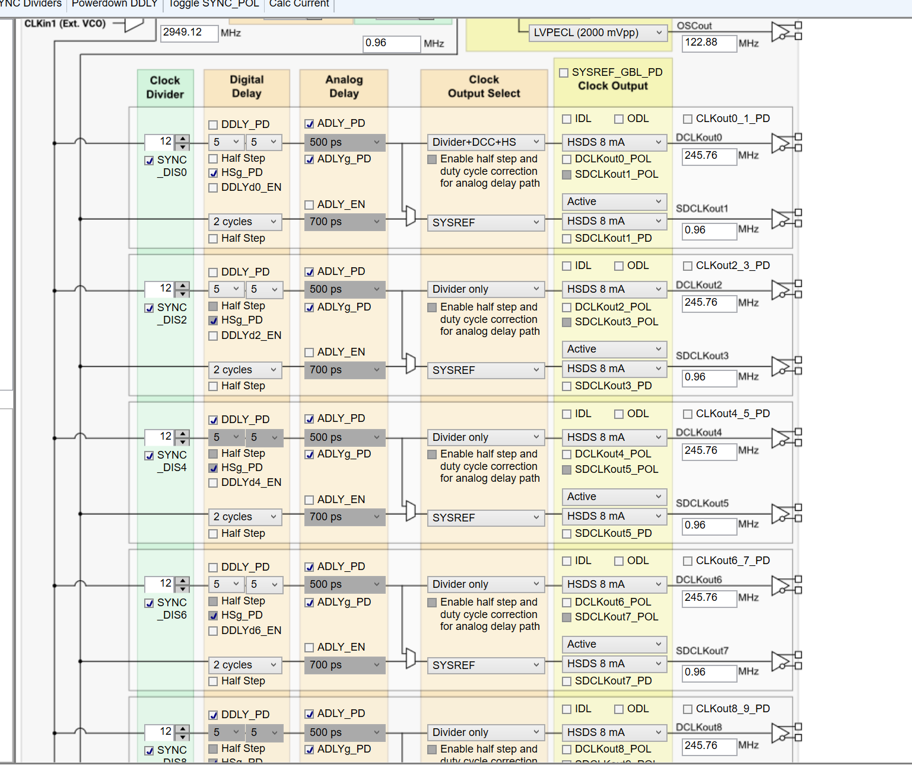
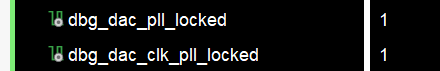
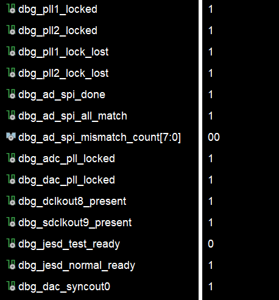
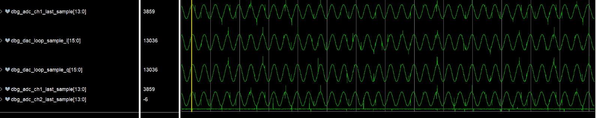

Software Design
软件设计
软件部分承担板卡上电后的配置、校验、链路启动和在线观测。整个流程围绕 LMK04828、AD9695、AD9144 和 JESD204B 链路展开，由 FPGA 内部状态机完成自动初始化，并通过 ILA 与调试标志位判断板卡运行状态。
FPGA
寄存器写表、SPI 回读校验、JESD204B 接收与发送、AD 到 DA 回环验证共同构成软件设计主线。
Software 01
TICS PRO 时钟配置
LMK04828 的参数先在 TICS PRO 中完成规划，再整理为寄存器表写入 FPGA 工程。这样板卡上电后无需外部手动配置，FPGA 会按照固定时序完成 LMK 复位、SPI 写表、同步脉冲和关键寄存器回读。

TICS PRO 配置：确定 LMK04828 的 PLL、输出频率、SYSREF 与各路时钟关系。
Clock Plan
从参数到可下载配置
时钟方案不只停留在工具界面，而是转化为 FPGA 可执行的寄存器写表；上电后由硬件逻辑按顺序写入 LMK04828，保证每次启动的一致性。
136
LMK 寄存器写入项
11
关键寄存器回读校验项
500k
LMK SPI 约 500 kHz
参数生成
在 TICS PRO 中完成 PLL、分频和 SYSREF 设置。
寄存器写表
将配置整理为固定顺序的 LMK 写入表。
FPGA 写入
上电后通过三线 SPI 自动写入并执行 SYNC。
回读确认
读取关键寄存器和 PLL 锁定状态，确认时钟稳定。
Software 02
表驱动 SPI 初始化框架
板上器件数量多、初始化顺序严格，因此工程采用“表项 + 状态机”的方式管理配置流程。每个表项包含写寄存器、读回校验或延时等待，FPGA 根据当前阶段选择目标芯片并执行相应操作。
LMK04828
时钟芯片配置
24 bit SPI 帧格式完成寄存器访问，写表结束后插入等待和 SYNC 脉冲，再读取 PLL 锁定与配置一致性。
- 复位高 20 ms、复位低 50 ms
- 写表完成后等待时钟稳定
- 观察 PLL1、PLL2 锁定标志
AD9695 × 2
ADC 分阶段配置
两片 ADC 分别进入测试模式与正常工作模式。测试阶段用于验证 JESD 接收链路，正常阶段用于后续采集与回环。
- ADC1 测试配置
- ADC2 测试配置
- 切换至正常采样模式
AD9144
DAC 与发送链路配置
DAC 采用独立读回线完成四线 SPI 校验，同时读取 PLL、JESD 同步和错误状态，作为发送链路启动依据。
- DAC 寄存器表写入
- PLL 与 JESD 状态回读
- 满足条件后启动 TX 数据发送
表项内容
操作类型、器件地址、写入值或期望值、校验掩码、延时参数共同描述一次配置动作。
状态机调度
LMK 配置完成后，依次推进 ADC 测试配置、DAC 配置、测试保持、ADC 正常配置。
结果输出
完成标志、回读匹配、首次错误位置、PLL 锁定状态和 JESD ready 信号输出到调试系统。
Software 03
上电初始化流程
初始化流程按照“先时钟、再芯片、后链路”的原则推进。时钟未稳定时不启动 AD/DA 配置；AD/DA 未通过关键状态检查时，不把 JESD 链路作为有效工作状态使用。
系统复位
FPGA 接收系统时钟，内部复位释放后进入配置流程。
LMK 写表
完成 LMK04828 复位、寄存器写入和时钟同步脉冲。
时钟校验
回读关键寄存器，并检查 PLL1、PLL2 锁定状态。
ADC 测试模式
两片 AD9695 输出测试序列，用于验证 JESD 接收。
DAC 配置
初始化 AD9144，读取 PLL 与 JESD 相关状态位。
ADC 正常模式
从测试序列切换至正常采集，为回环验证做准备。
链路观测
通过 ILA 查看同步、有效数据、错误计数和回环样点。
Software 04
JESD204B 与回环数据路径
AD9695 与 AD9144 之间的数据不经过外部处理器搬运，而是在 FPGA 内部完成接收、解包、监测、缓存和再发送。工程同时保留内部 NCO 测试源与 AD 到 DA 回环路径，便于分阶段验证 DAC 发送和完整闭环。
AD → FPGA → DA 数据通路
AD9695 × 2
4 lane / 片
FPGA JESD RX
解包与监测
格式转换
异步 FIFO
AD9144
JESD TX 输出
接收侧
每片 ADC 使用 4 条 JESD lane，两片共 8 条高速接收通道。
监测侧
测试模式下检查 Ramp 样点是否连续递增，快速判断链路是否跑通。
发送侧
将 14 bit ADC 样点转换为 16 bit DAC 数据，并送入 AD9144。
RX Monitor
ADC 数据监测
接收端从 64 bit JESD payload 中解析多路 14 bit 样点，输出 pass、fail、error_count 和 last_sample，方便判断 ADC 测试码是否稳定。
TX Source
DAC 发送源
发送端既可使用 FPGA 内部 NCO 产生正交测试波形，也可使用 ADC 回环数据验证采集、搬运和回放链路。
Clock Domain
跨时钟缓存
ADC 接收用户时钟与 DAC 发送用户时钟不同，回环路径通过异步 FIFO 缓冲，降低跨时钟域带来的不确定性。
Status Gate
状态门控
DAC TX 的启动依赖配置完成、PLL 锁定、同步状态和 tready 等条件，避免在链路未准备好时输出无效数据。
Software 05
调试与状态监测
调试设计把关键状态集中接入 ILA：时钟 PLL 是否锁定、SPI 写表是否完成、回读是否匹配、JESD 是否同步、ADC 是否有有效数据、DAC 是否开始发送，都可以在 Vivado 中直接观察。

PLL 锁定标志位：确认 LMK、ADC、DAC 相关时钟链路进入稳定状态。

ILA 标志位：集中观察 SPI 完成、JESD 同步、tvalid、错误计数等运行状态。

AD 采集数据与 DA 回环输出数据：用于验证采集、FPGA 搬运和回放链路连通性。
配置完成
LMK、AD、DA 的 done 信号用于判断初始化流程是否走完。
回读匹配
mismatch_count 与 first_mismatch 帮助定位寄存器配置异常。
JESD 同步
sync、tvalid、reset_done 和 lane activity 判断高速链路状态。
回环样点
观察 ADC 样点与 DAC 输出样点，确认数据通路真实闭合。